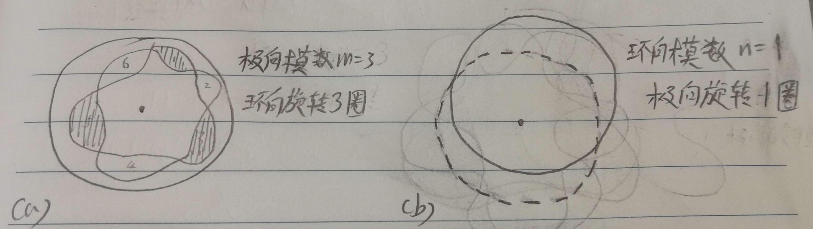

Magnetic island only appear in non idea MHD condition, where the
resistivity effect is considered.
Although we always talk about (m/n=3/1) mode, where m is poloidal
mode number, n is toroidal mode number. However, in real condition, it
is always difficult to imagine the structure of magnetic island. So we
make a simulation of magnetic island structure here. Major reference of
this simulation see this book [1]. In the future, the theory concerning
magnetic island may also be discussed.
The basic idea to plot this island structure is to first build an
elliptic surface and then let this surface rotation in a helix structure
of magnetic field line as safety factor defines.
q = m/n and (m,n) MHD mode[2]
Pay attention, for safety factor at the rational flux surface \(q = m/n = \frac{\Delta\phi}{\Delta\theta}\)
, the m actually refers toroidal angle and n refers to poloidal angle.
And the m/n = 3/1 MHD mode number defines m as poloidal mode number, n
as toroidal mode number. This definition agrees with the definition of
safety factor. The m/n = 3/1 mode is located at the q = m/n = 3/1
rational surface. Where the poloidal mode number m = 3 means the mode
rotates 3 turns in toroidal direction, and toroidal mode number means
the mode rotates 1 turn in poloidal direction. You can easily understand
this by the poloidal cross section of this mode, m = 3 has 3*2 circles
and which means the mode rotates 3 turns toroidally.  Fig(a) shows the poloidal
mode number m at the poloidal cross section, where m = 3 means the
islands structure rotate 3 turns toroidally, fig(b) shows the toroidal
mode number n at the toroidal cross section, n = 1 means the islands
structure rotate 1 turn poloidally.